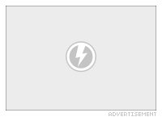
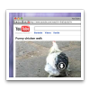

Block Flash
Flashless blocks Flash content on a website.
Blocked Flash ad.
All Flash elements on a site are replaced with an unobtrusive graphic. To watch the flash content just click on the placeholder.
Preview Video Images
Get a glimpse of the video without loading the flash content. So you see what you will get before you decide to play the video.
{kind=link}
A preview image is displayed for most of the popular video sites. The name of the video’s origin is displayed in the lower right corner.*
Play without Flash
You can play most videos without having to use Flash. Using Quicktime the videos are played using way less resources.
Just hold the shift key and click the coloured triangle.*
Download Videos
 At many popular video services you can directly download the video. Just hold the option key and click the arrow.*
{kind=link}
Remove Advertisements
 Annoying advertisements can be removed with a simple menu command.
Annoying advertisements can be removed with a simple menu command.
Many more options are available from the menu. You can play or remove all elements from the same source. And you can even let Flashless do it automatically for you.
Jump to Original
Watch videos on their home site. So you can see more information about this video including comments and related videos. This is especially useful on blog site that aggregate many videos from different origins.
{kind=link}
Just hold the command key and click the curly arrow.*
*) See a list of supported services.
Video stills (cc) Harald Walker (first and last screenshot), Nattu (Menu screenshot).